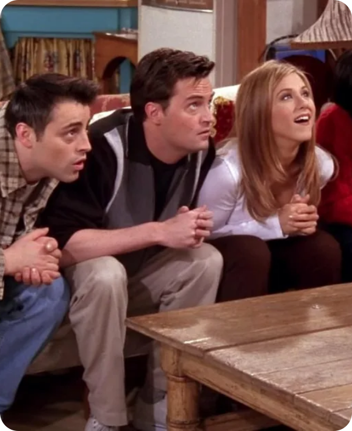

Фанатские теории о «Друзьях»: Что мы могли бы увидеть в продолжении

Чендлер: «Могу я сказать что‑то? Я не знаю, как это сказать, но… Я не знаю, как это сказать».

С момента выхода последнего эпизода «Друзей» в 2004 году поклонники этой культовой комедии продолжают обсуждать и анализировать любимых персонажей и их истории. Несмотря на то, что шоу завершилось более 15 лет назад, интерес к нему не угасает. В этом контексте возникло множество фанатских теорий о том, что могло бы произойти в продолжении «Друзей». Давайте рассмотрим некоторые из них.
1. Возвращение к старым местам
Одной из самых популярных теорий является идея о том, что продолжение могло бы сосредоточиться на возвращении друзей в Нью-Йорк после долгого времени разлуки. В этом сценарии мы могли бы увидеть, как герои адаптируются к изменениям в своих жизнях и как их дружба выдерживает испытания временем. Возможно, они встретятся в кафе Central Perk, которое стало символом их юности.
2. Новые поколения
Ещё одна интересная теория заключается в том, что продолжение могло бы сосредоточиться на детях главных героев. Мы могли бы увидеть, как новые поколения сталкиваются с проблемами, похожими на те, с которыми сталкивались их родители. Это могло бы дать возможность для комических ситуаций и новых динамик в отношениях, а также показать, как изменился мир с тех пор.
3. Профессиональные достижения
Некоторые фанаты предполагают, что продолжение могло бы исследовать карьерные пути героев. Например, мы могли бы увидеть, как Моника и Чендлер открывают новый ресторан, Рэйчел достигает успеха в модной индустрии, а Росс становится известным учёным. Это дало бы возможность для новых сюжетных линий и конфликтов, связанных с работой и личной жизнью.
4. Любовные линии
Не менее интересной является теория о том, что в продолжении могли бы быть разработаны новые любовные линии. Например, фанаты часто обсуждают возможность воссоединения Росс и Рэйчел или же появления новых персонажей, которые могли бы стать романтическими интересами для других героев. Это могло бы добавить драматизма и интриги в сюжет.
5. Социальные темы
С учётом изменений в обществе и актуальных социальных вопросов, продолжение могло бы затронуть важные темы, такие как равенство, гендерные роли и проблемы современного общества. Это сделало бы шоу более актуальным и позволило бы героям обсудить вопросы, которые волнуют их поколение.
6. Кроссоверы с другими сериалами
Некоторые фанаты мечтают о кроссоверах между «Друзьями» и другими популярными сериалами, такими как «Как я встретил вашу маму» или «Бруклин 9–9». Это могло бы добавить новый уровень юмора и неожиданности, а также позволило бы зрителям увидеть взаимодействие любимых персонажей из разных вселенных.
Заключение
Фанатские теории о возможном продолжении «Друзей» показывают, насколько глубоко это шоу запало в сердца зрителей. Независимо от того, какие идеи могут быть реализованы в будущем, одно остаётся неизменным: дружба, любовь и комедия — это вечные темы, которые всегда будут актуальны. Будем надеяться, что когда‑нибудь мы снова увидим наших любимых героев и узнаем, как сложилась их жизнь после финала шоу.